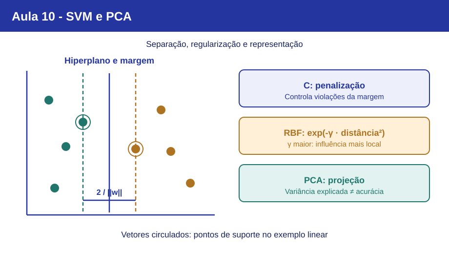

Nota visual 10 - Support Vector Machines e PCA

Questão central: como definir uma fronteira que separe classes e generalize para novos exemplos?
Mapa conceitual
flowchart TD
A["Treino padronizado"] --> B{"Separação linear?"}
B -->|linear| C["Hiperplano e margem"]
B -->|não linear| D["Kernel RBF"]
C --> E["Otimizar com penalização C"]
D --> E
E --> F["Validar C e gamma"]
F --> G["Predição por fronteira"]
A --> H["PCA: projeção para análise"]
classDef base fill:#e9eafb,stroke:#2435a0,color:#17215e;
class A,B,C,D,E,F,G,H base;
Conceitos em sequência
- Hiperplano e margem: SVM procura fronteira de decisão de grande margem; vetores de suporte influenciam sua posição.
- Soft margin e C: C menor implica maior regularização; C maior penaliza mais violações de margem.
- Separação não linear: Mudança de representação e kernel trick; visualização 2D para 3D como apoio conceitual.
- RBF/Gaussiana: K(x,z)=exp(-gamma ||x-z||²); gamma menor amplia influência; gamma maior torna influência local.
- Experimento: Pipeline com StandardScaler e SVC linear/RBF; validação para escolha de parâmetros.
- PCA: Redução de dimensionalidade para visualização; explained_variance_ratio_ indica fração de variância explicada por componente.
Margem e vetores de suporte
f(x) = wᵀx + b
classe = sign(f(x))
margem total = 2 / ||w||
Na formulação canônica do SVM linear, w define a orientação do hiperplano e b o deslocamento. As superfícies f(x)=±1 delimitam a margem. Vetores de suporte são os exemplos que influenciam a solução. Soft margin admite violações, penalizadas pelo hiperparâmetro C.
| Parâmetro | Valor menor | Valor maior |
|---|---|---|
| C | Maior regularização relativa; tolera mais violações | Penaliza mais violações; pode ajustar ruído |
| gamma (RBF) | Influência mais ampla | Influência mais localizada |
Kernel RBF: similaridade pela distância
K(x,z) = exp(-γ ||x-z||²)
Se a distância quadrática é 4, com γ=0,25 obtemos exp(-1)≈0,368; com γ=1, exp(-4)≈0,018. O kernel influencia a geometria da fronteira; gamma não é uma taxa de aprendizagem. C e gamma devem ser escolhidos conjuntamente por validação. O kernel trick calcula produtos internos no espaço de características sem construir explicitamente todas as coordenadas.
PCA: projetar não é classificar
PCA encontra direções ortogonais de maior variância. Após centralizar os dados, uma projeção em k componentes usa Z=(X-μ)Vₖ, onde Vₖ contém as direções escolhidas. Se as duas primeiras componentes explicam 0,60 e 0,25 da variância, sua soma é 0,85. Isso não significa 85% de acurácia nem garante separação das classes.
PCA pode apoiar uma visualização 2D sem ser usado pelo classificador. Se fizer parte do pipeline, ajuste escala e PCA apenas no treino de cada fold. A visualização de uma fronteira em duas componentes não é necessariamente a fronteira do modelo treinado com todos os atributos.
Revisão de 30 segundos
SVM procura uma fronteira regularizada de grande margem; RBF permite relações não lineares. PCA projeta dados em direções de maior variância e não é um classificador.
Erros conceituais frequentes
- Usar o teste para escolher parâmetros ou transformações.
- Tratar acurácia como critério universal de qualidade.
- Confundir gamma com C ou com taxa de aprendizagem.
- Interpretar variância explicada pelo PCA como acurácia.
Revisão de 1 minuto
Identifique hiperplano, margem e vetores de suporte; explique como C e gamma alteram a fronteira e por que PCA não garante separação.
Checklist
- [ ] Identifico hiperplano, margem e vetores de suporte.
- [ ] Distingo treinamento, validação e teste.
- [ ] Interpreto C, gamma e o kernel RBF.
- [ ] Distingo projeção PCA de classificação.
Próxima conexão: comparar DT, KNN e SVM exige o mesmo protocolo experimental e métricas.